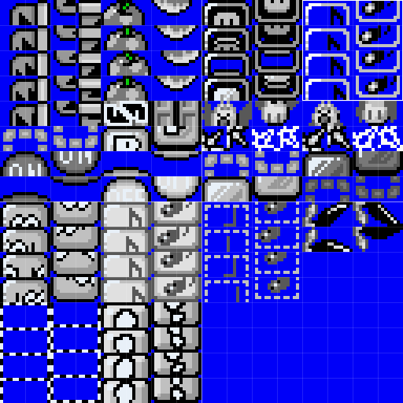

🠈
Graphics
The baserom does a good amount of shuffling and remapping to fit in some useful sprite and block resources.
Contents
Edited Graphics
The following is a breakdown of modifications to original graphics files. Originals can be found in the resources/original_graphics folder.
GFX00 : Global Sprite Graphics (SP1)*
- the 8x8 tiles for Mario have been removed as they are now dynamically inserted.
- tiles for the bounce sprites for the ON/OFF and Note blocks have been remapped here.
- 8x8 tiles for lava splashes, Yoshi's tongue and throat have been remapped here also.
- a frame for the blue sliding koopa has been moved to GFX01.
- space was reserved for dynamic retry tiles.
GFX01 : Global Sprite Graphics (SP2)*
- graphic for the donut block sprite replaces the Smiley coin.
- tile for Piranha plant stem was added here.
- a frame for the blue sliding koopa from GFX00 was added here.
- flopping fish graphics were moved to GFX13.
- Smiley coin was remapped to use other sprite coin tile.
- tile for blue sliding koopa has been remapped and Poison Mushroom was added in its place.
GFX08 : Switch Palace (FG3)
- Sunken ship tiles were moved to GFX1E.
- Additional corner tiles for Switch palace foreground were added.
GFX13 : Sprite Tiles (SP3)*
- note block bounce sprite frame moved to GFX00.
- tiles for the flopping fish from GFX01 were added here.
- a frame of the hammer has been moved.
- 8x8 tiles for the small note and egg fragment have been moved.
GFX14 : Global Foreground Tiles (FG1)
- Some unused tiles here were replaced with sideways cloud graphics and vertical rope.
GFX16 : Rope Foreground (FG3)
- tiles for the mushroom platform were shifted so a proper rope corner could be added.
GFX17 : Global Foreground Tiles (FG2)
- a duplicate tile in the door and the unused pressed P-switch tile were reserved for some animation.
GFX1E : Overworld (FG4)
- Half sunken ship was moved into blank tile space.
GFX2A : Layer 3 tiles (LG3)
- The unused graphics for "AND" have been removed, and part of "Nintendo" has ben moved here from GFX2B.
GFX2B : Layer 3 tiles (LG4)
- The unused graphics for "Super Mario Bros. 4" has been replaced with "Romhack Races Baserom".
- Part of "Nintendo" has been moved to GFX2A, and an "8" and "9" tile has been added to make it usable when typing those numbers into info messages.
GFX33 : Global Animation Tiles
- the midway animation frames have been fixed.
- always turning block animation was lightly edited.
- the castle conveyor/stairs have been fixed to use the the castle's brick pattern.
*See the resources/patches/sprite_remaps.asm file for detailed remapping information.
ExGraphics
ExGFXB54: ExGraphic Version of Big Bush and Pipe (BG2)
- contains optional animation tiles for the bushes and big pipe that can be used as ExGraphics.
- must be loaded into slot FG2, and their Map16 Files are found in
resources/map16. See demo level for example.
ExGFXE17: Custom Global Block Tiles (FG2)
- contains all tiles for custom global blocks that use ExGraphics and the global line guide and screen scrolling pipe tiles.
- this resource is arranged to be drop in replacement for GFX17 (FG2) as the custom blocks use tiles normally used for the Big Bush and Large Slanted Pipe objects.
ExGFXFF: Font (BG3)
- a basic 8x8 font and symbol set for in-level text, used in the Demo level.
Alternate ExGraphic
Lunar Magic supports a special sort of ExGraphic called "Alternate ExGFX" which is used for ExAnimation to store frames that are globally available in the ROM (opposed to slot AN2, which is per-level) these are limited to ExGFX60-63
ExGFX61: Global ExAnimation
In the baserom the ExGFX61 resource contains all global animation frames, for ON/OFF tiles, one-Ways, the sprite note block, etc. See the Exanimation page for more details on how they're used. However there are some extra frames available for additional use.
